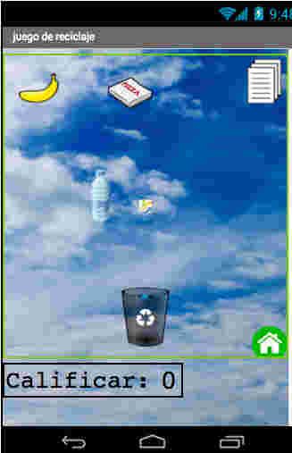

That's how you pronounce my last name.
19 year old Filipina immigrant whose goal is to find the cross section between Technology and the Performing Arts while inspiring people who share the same identities as me that they have a place in the tech field.
I am currently a sophomore majoring in Software Engineering and minoring in Computer Science at Stevens Institute of Technology in Hoboken, NJ and will be working as a part time Software Developer intern at IBM in New York City!
I discovered that Computer Science was a career in my sophomore year of high school. The following summer, I was accepted to the Girls Who Code Summer Immersion Program at the American International Headquarters(AIG) in New York City. Here, I spent seven weeks learning the foundation of game development with Python, robotics with Arduino, and web development using HTML, CSS, and JavaScript. Ever since, I have dedicated myself to attending hackathons,teaching myself through personal projects, founding the Girls Who Code Club at my high school, and even pursuing Software Engineering as a major in college. Now I want to devote my life in creating impactful things using code.
Untitled was a project I had developed at the Girls Who Code Summer Immersion Program. It was a books meets Pokemon Go concept.
We wanted to find a way for people to read and go to their local libraries more often. So when a user enters the website, they see a shelve filled with books without the title of the book. All they receive are tags that provide snippets of things found in the story and when they click on it, they receive an excerpt and on the side they see a map with an input bar. The user needs to enter in their current location and they are provided with a list of local libraries that has the speficic book. It is their job to go find it and read it, once they've accomplished that, they receive points for reading it. A Book Adventure!
Recíclame is a mobile app for Android phones entirely in Spanish that teaches kids the fundamentals of recycling. The app includes a point system for recording what has been recycled as well as a mini game where kids have to drag the recycling bin and catch the correct recyclables
I am a sucker for good design. Currently, I work as a freelance graphic designer for a local dance studio in Hoboken where I am responsible for designing posters, social media posts, and merchandise. My goal is to improve my design skills as a side hobby over the years and expand my freelance design service to other local businesses.
I grew up with Filipino aunts who forced me to sing on the karaoke and dance at every Filipino party I went to. Developing a passion for performing was simply inevitable. However, not having been able to afford singing or dancing lessons, I made the most out of the resources that I had in my school. In elementary school, I joined my school's choir. In middle school, I joined the rockband. In high school, I was a musical theatre major. Now in college, I perform in the univeristy's a capella group, Stevens Quackapella. Having a background as a performer shaped my extremely outspoken and outgoing personality and I could not be more thankful for it.